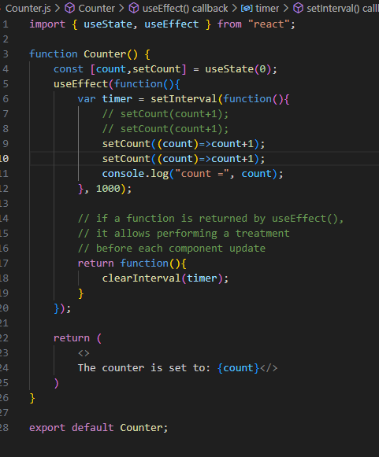
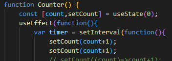
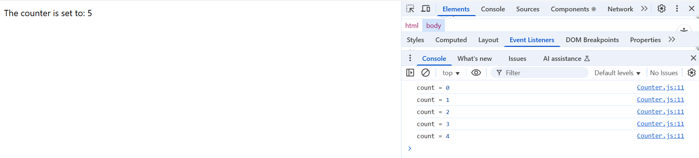
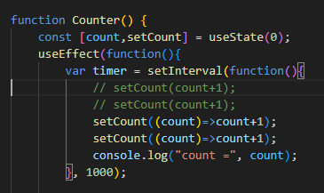
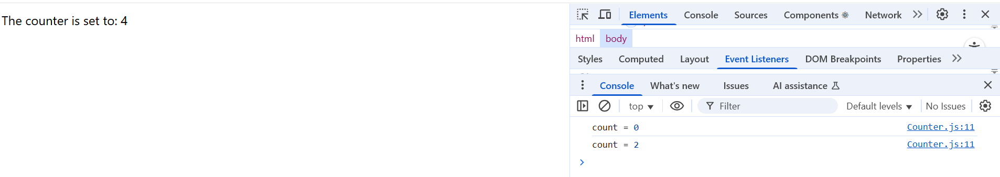
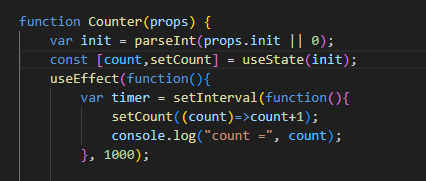
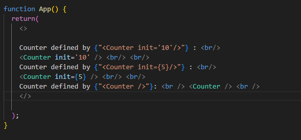
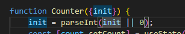

I left it the other day when the counter was going of a fashion, but then going bananas shortly after setting going. useEffect, with a callback function, will perform the callback function before each display (another part of React that I need to get my head around - what happens and when).
With the dictated code, we keep the setInterval containing the main meat of the 'count' aspect with useState returning the count, then refreshing with 'count+1'. But we put this function within userEffect,
The next point we go onto look at is how, in the counter app, the 'count' pushed to the console is different to the one pushed to the page, that it's out by one. The error is further shown by including two increments of the 'count' call, where the counter still iterates by 1 rather than counting in pairs (expected if the 'count' function is running twice):
 The snippet of code shows that the separate iterations of 'count' aren't updated form each other but are updating asynchronously. Meaning that the second iteration is not using the first iteration to update itself, but is using the original version. To counter this, the book prescribes using a variation of setCount that uses a callback function as a parameter, as opposed to a value:
The difference here is that running a specified function will update the original const 'count' every time it's run and therefore the counter goes in twos:
But it still doesn't solve the original problem of the page and the console being at different stages (not to jump ahead, but I'm guessing because the console is updated within the first function that's nested in the others and the page isn't updated until the return statement of the second nested function):
There'll be method in this approach, and it's useful showing how issues with asynchronous events can be overcome, but not facing the root of the original problem we came across.
(Spoiler Alert I've come crashing to the end of the chapter, and the console is still 'out by one', so I think it best to move on. Maybe I'll get a brainwave and come back, but I'm not holding my breath.)
Moving onto using init properties for a function, you can insert an initial value (written here as 'init', and 'props' as 'property') to a specified function. The below code snippet shows passing in the 'init' property as an Integer (if stated as a "string" rather than a {JavaScript value}), or reverting to '0' if a value isn't given.
Then, as well as making changes to 'counter.js', changes are also made to App.js to demonstrate the different ways to pass an 'init' value into a function:
And a further unheralded introduction to ES6 syntax (JavaScript 2015 'new features'), you can access the 'init' property directly by using the attribute in the form of an object, making it more readable and that bit more elegant in a way:
That takes me to the end of the first chapter, and I feel like it's covered a lot. Looking forward to some reinforcement of previous lessons in the upcoming chapters and tutorials, as well as keeping up the pace of learning. Using this as a bit of 'reflective practice' as well as anything else, I'm not sure what I want this to be, going forward. I've noticed that I've felt like i've been parotting a book for a lot of it, especially this second one, but I'm also conscious that I don't want this to be too manicured - I know if I let it get too far that way, I'll never 'hit send'. Refer to previous comments on 'sacrificing good at the altar of great' and so forth. That's not to say I'm not eager to improve, but to try and make continual improvement as I go rather than labouring over each submission.